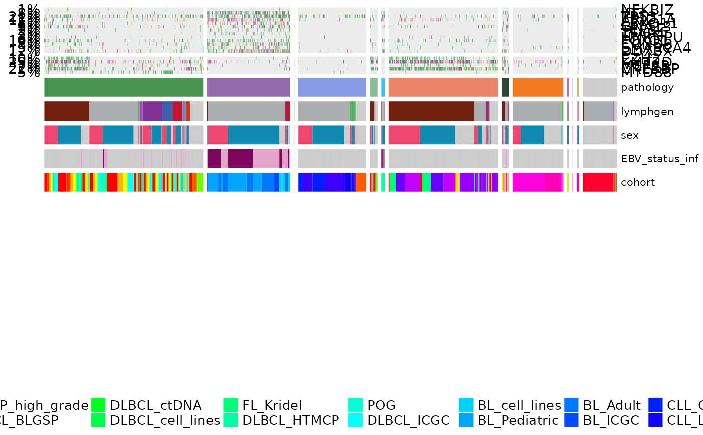

prettyOncoplot.RdCreate a highly customizable oncoplot.
prettyOncoplot(
maftools_obj,
onco_matrix_path,
genes,
include_noncoding = NULL,
keepGeneOrder = FALSE,
keepSampleOrder = TRUE,
highlightHotspots = FALSE,
these_samples_metadata,
metadataColumns,
numericMetadataColumns,
expressionColumns = c(),
numericMetadataMax,
sortByColumns,
arrange_descending = FALSE,
removeNonMutated = FALSE,
minMutationPercent,
mutAlpha = 1,
recycleOncomatrix = FALSE,
splitColumnName,
splitGeneGroups,
showTumorSampleBarcode = FALSE,
groupNames,
hide_annotations,
annotate_specific_genes = FALSE,
this_forest_object = NULL,
custom_colours = NULL,
hideTopBarplot = TRUE,
tally_all_mutations = FALSE,
tally_all_mutations_max = 1000,
hideSideBarplot = FALSE,
box_col = NA,
annoAlpha = 1,
legend_direction = "horizontal",
ylim = NULL,
legend_position = "bottom",
legend_row = 3,
legend_col = 3,
metadataBarHeight = 1.5,
metadataBarFontsize = 5,
legendFontSize = 10,
fontSizeGene = 6,
annotation_row = 2,
annotation_col = 1,
verbose = FALSE
)A maftools object containing the mutations you want to plot.
Provide a path to an onco_matrix file instead of a MAF object if the former is unavailable (this limits functionality a bit).
An optional vector of genes to restrict your plot to.
List of non-coding regions to be included, default is NULL. Specify like this: include_noncoding=list("NFKBIZ" = c("3'UTR"), "HNRNPH1" = "Splice_Region")
Set to TRUE if you want to preserve the gene order specified.
Set to TRUE if you want to preserve the sample order specified.
Set to TRUE to highlight hot spots. Default is FALSE.
Data frame containing metadata for your samples.
A vector containing the categorical column names you want to plot below.
A vector containing the numeric columns you want to plot below.
Optional variable for retreiving expression values for a specific gene(s).
A numeric vector of cutoffs to apply to numeric columns above.
A vector containing the column names you want to sort columns (patients) on.
A Boolean parameter. Set to TRUE to sort metadata in descending fashion. Default is FALSE.
Set to TRUE to drop unmutated cases.
Only genes mutated in more than minMutationPercent % patients will be included.
Optional alpha to apply to mutation colours.
Set to TRUE most of the time to reuse the oncomatrix saved by maftools.
Optional argument to indicate which metadata column to split on. Default is set to pathology.
Split genes into groups for better seperation (between different gene-groups) in prettyOncoplot.
Optional argument for showing tumor barcode. Default is FALSE.
optional vector of group names to be displayed above heatmap. Should be the same length as the number of groups that will be shown. Default is NULL (no labels).
Hide annotations for specifc ashms. argument takes a list with annotations.
Optional argument, specifying whether the features should be labelled according to their significance in one of the pathologies. Default is FALSE (no annotation).
If annotate_specific_genes is specified, this arguments takes the output of GAMBLR::prettyForestPlot directly to determine the annotations.
Provide named vector (or named list of vectors) containing custom annotation colours if you do not want to use standartized pallette.
Optional argument for removing top bar plot. Default value is TRUE.
Optional argument. Set to TRUE to tally all mutations. Default is FALSE.
Optional argument. Default is 1000.
Optional argument for removing side bar plot. Default value is FALSE.
Colour of boxes for outlining mutations (can be problematic with larger oncoprints).
Optional alpha to apply to annotation colours.
Direction of lgend, defualt is "horizontal".
Limit for y-axis.
Position of legend, default is "bottom".
Fiddle with these to widen or narrow your legend.
Fiddle with these to widen or narrow your legend.
Optional argument to adjust the height of bar with annotations. The default is 1.5.
Optional argument to control for the font size of metadata annotations. The default is 5.
Font size for legend, default is 10.
Font size for gene labels (default 6).
Row for annotations, default is 2.
Column for annotations, default is 1.
Set to TRUE to enable verbose mode (debugging messages.
Nothing
Make an oncoplot that is pretty using ComplexHeatmap. The metadata is expected to follow the structure and column naming used in GAMBL. If you provide your own non-GAMBL samples and metadata, you must include at least the following columns with these names. The first one should match the Tumor_Sample_Barcode in the MAF object or onco_matrix you provide. sample_id, pathology
library(grid)
#get some data
maf_data = get_coding_ssm(seq_type = "genome")
#> reading from: /projects/nhl_meta_analysis_scratch/gambl/results_local/all_the_things/slms_3-1.0_vcf2maf-1.3/genome--projection/deblacklisted/augmented_maf/all_slms-3--grch37.CDS.maf
#> mutations from 1652 samples
#> after linking with metadata, we have mutations from 1646 samples
maf_metadata = get_gambl_metadata()
maf = maftools::read.maf(maf_data, clinicalData = maf_metadata)
#> -Validating
#> --Removed 1078 duplicated variants
#> -Silent variants: 65357
#> -Summarizing
#> --Possible FLAGS among top ten genes:
#> TTN
#> -Processing clinical data
#> -Finished in 28.4s elapsed (56.8s cpu)
#define some genes of interest
bl_genes = c("NFKBIZ", "ID3", "TP53", "ARID1A", "FBXO11",
"GNA13", "TCF3", "TFAP4", "HNRNPU", "FOXO1",
"CCND3", "SMARCA4", "DDX3X")
dlbcl_genes = c("EZH2", "KMT2D", "MEF2B", "CREBBP", "MYD88")
genes = c(bl_genes, dlbcl_genes)
#define gene groups
gene_groups = c(rep("BL", length(bl_genes)), rep("DLBCL", length(dlbcl_genes)))
names(gene_groups) = genes
#filter metadata
maf_metadata = dplyr::filter(maf_metadata,!lymphgen %in% c("COMPOSITE"))
#convert metadata column into factor
maf_metadata$pathology = as.factor(maf_metadata$pathology)
#define order of factors for selected metadata column
maf_metadata$pathology = factor(maf_metadata$pathology,
levels = c("DLBCL", "BL",
"B-ALL", "CLL",
"COMFL", "DLBCL-BL-like",
"FL", "HGBL",
"MCL", "PBL",
"SCBC", "UNSPECIFIED"))
maf_metadata = with(maf_metadata, maf_metadata[order(pathology),])
#create prettyOncoplot
prettyOncoplot(maftools_obj = maf,
genes = genes,
these_samples_metadata = maf_metadata,
splitGeneGroups = gene_groups,
keepGeneOrder = TRUE,
splitColumnName = "pathology",
metadataBarHeight = 5,
metadataBarFontsize = 8,
legend_row = 2,
fontSizeGene = 11,
metadataColumns = c("pathology", "lymphgen", "sex", "EBV_status_inf", "cohort"),
sortByColumns = c("pathology", "lymphgen", "sex", "EBV_status_inf", "cohort"))
#> [1] "numcases: 1646"
#> [1] "numgenes: 18"
#> All mutation types: Frame_Shift_Del, Missense_Mutation, Multi_Hit,
#> Splice_Site, Nonsense_Mutation, Frame_Shift_Ins, In_Frame_Del,
#> Translation_Start_Site, Nonstop_Mutation, In_Frame_Ins.
#> `alter_fun` is assumed vectorizable. If it does not generate correct
#> plot, please set `alter_fun_is_vectorized = FALSE` in `oncoPrint()`.
#> Following `at` are removed: RNA, 3'UTR, Splice_Region, Silent,
#> hot_spot, because no color was defined for them.
#> Following `at` are removed: RNA, 3'UTR, Splice_Region, Silent,
#> hot_spot, because no color was defined for them.
#> Following `at` are removed: RNA, 3'UTR, Splice_Region, Silent,
#> hot_spot, because no color was defined for them.
